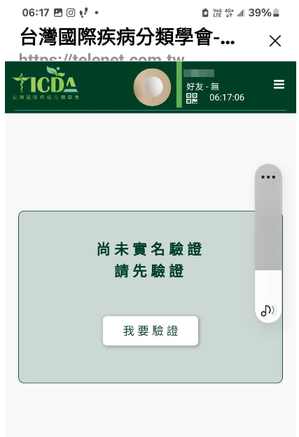
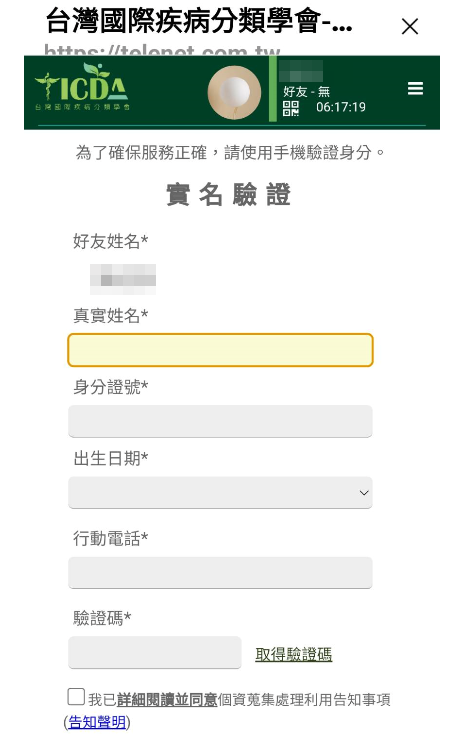
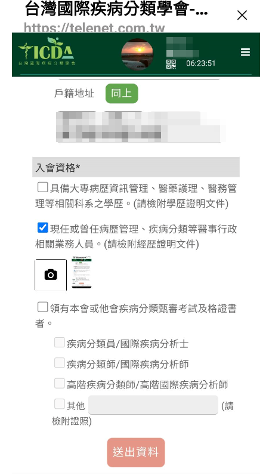
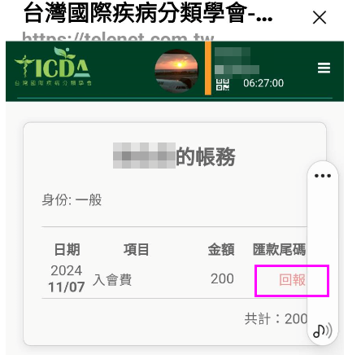
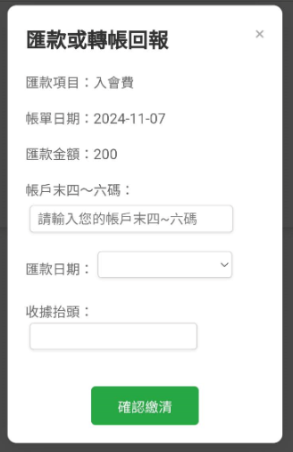
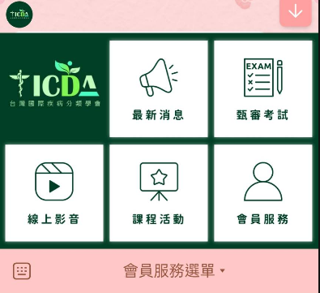

| ♦ 入會申請流程： |
| step 1. 個人會員、團體會員及學生會員申請入會時，應填具入會申請後，經理事會通過，並於繳納入會費與常年會費後入會。 step 2. 曾觸犯刑法或違反本會規定之專業倫理規範者，本會得拒絕其入會之申請。 step 3. 個人會員、學生會員請使用手機，點選學會的LINE@官方帳號連結https://lin.ee/9p0vTdm |
| 完成身分驗證及入會程序並至LINE@我的帳務，進行繳費帳號後五碼之回報，即完成入會程序。 |
|
繳費方式 戶名 社團法人台灣國際疾病分類學會 銀行 臺灣銀行松山分行 銀行代號 004 銀行帳號 064-00106246-2 |
|
1. 請使用手機，點選LINE@官方帳號連結 https://lin.ee/9p0vTdm 2. 點選「我要入會」。 |
|
| 3. 進行實名驗證，並申請我要驗證。 |  |
| 4.進入「實名驗證」詳細填寫基本資料，閱讀個人資料蒐集、處理及利用告知聲明，簽名存檔。 |  |
| 5. 完成「實名驗證」後，點選進入「我要申請入會」，選擇加入會員類別，並請先填寫會員完整資料，及於相機處上傳入會資格之相關文件，確認無誤後提交審核。 |  |
| 6. 等待秘書處審核通過，收到繳費通知後，請於5日內完成繳費，並至我的帳務回報。 |  |
| 7. 繳費後，至LINE@我的帳務，進行繳費帳號後五碼之回報，及確認收據抬頭後，按確認繳清送出帳務回報。 |  |
| 8. 秘書處審核完成，將收到確認繳費完成之通知，即完成入會程序，享有會員權益。 |  |